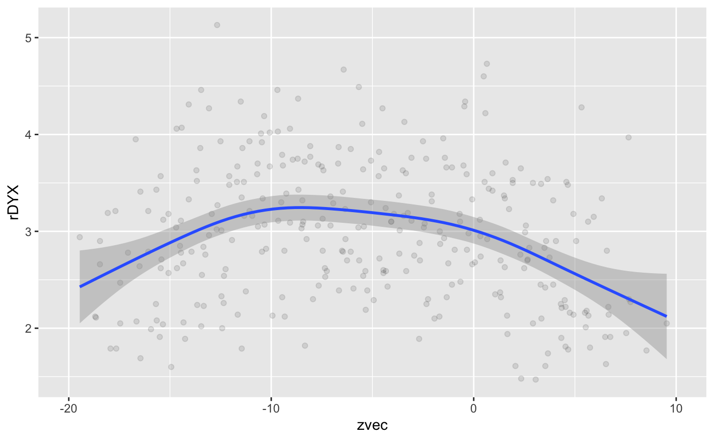

This vignette is still under construction.
library(card) library(lubridate) #> #> Attaching package: 'lubridate' #> The following objects are masked from 'package:base': #> #> date, intersect, setdiff, union library(tidyr) library(dplyr) #> #> Attaching package: 'dplyr' #> The following objects are masked from 'package:lubridate': #> #> intersect, setdiff, union #> The following objects are masked from 'package:stats': #> #> filter, lag #> The following objects are masked from 'package:base': #> #> intersect, setdiff, setequal, union library(magrittr) #> #> Attaching package: 'magrittr' #> The following object is masked from 'package:tidyr': #> #> extract library(ggplot2)
This vignette demonstrates the use of the circadian rhythm analysis functions. It demonstrates a robust use of circ_sun() and circ_center() to create a new dataset for analysis that is rotated around the zeitgeiber of sunrise.
# Data set to be used is included data("twins") head(twins) #> # A tibble: 6 x 22 #> # Groups: patid, hour [6] #> patid age bmi race smoking hptn dm chf prevchd med_beta_blocke… #> <dbl> <dbl> <dbl> <fct> <fct> <fct> <fct> <fct> <fct> <fct> #> 1 1 49 27.4 0 1 1 0 0 0 0 #> 2 1 49 27.4 0 1 1 0 0 0 0 #> 3 1 49 27.4 0 1 1 0 0 0 0 #> 4 1 49 27.4 0 1 1 0 0 0 0 #> 5 1 49 27.4 0 1 1 0 0 0 0 #> 6 1 49 27.4 0 1 1 0 0 0 0 #> # … with 12 more variables: med_antidepr <fct>, beck_total <dbl>, #> # sad_bin <fct>, sad_cat <fct>, PETdiff_2 <fct>, dyxtime <dttm>, date <date>, #> # hour <dbl>, rDYX <dbl>, sDYX <dbl>, HR <dbl>, CP <dbl> twins %<>% subset(patid %in% c(1:30))
The research problem is that participants came from around the country for a study. Continuous, 24-hour measures were obtained. However, the patients came in from different time zones and on different dates over the course of 10 years. Findings could reflect perhaps jetlag instead of physiological disturbances. We could use sunrise and sunset times as natural zeitgeibers to standardize the time series data.
The first step is inclusion of geographical locations, along with study date, to calculate sunrise times. This dataset was recorded in Atlanta, GA, which will make up the latitude and longitude values. This is a limitation, and when the actual / true locations are available, the vignette will be updated (TODO).
# Geographic data is needed to calculate sunrise twins$lat <- 33.749 twins$lon <- -84.388 # Sunrise is dependent on location and date twins$sunrise <- circ_sun(date = twins$date, lat = twins$lat, lon = twins$lon)
Another limitation is the issues in R with POSIX. The time zone of the sunrise is demarcated by “UTC”, but is actually corrected for the timezone by location. Next, we have continuous measures of autonomic physiology measured by ECG, called Dyx. These are recorded in a variable called dyxtime. The recordings start in the afternoon, and continue to the next day. The sunrise in between is likely the best marker to center around. We need to use the circadian centering function for each patient to be able to compare them fairly.
# Time series data length(twins$dyxtime) #> [1] 317 # Number of participants length(unique(twins$patid)) #> [1] 14 # Unique sunrise times per patient zeit <- twins %>% group_by(patid) %>% arrange(dyxtime) %>% select(patid, sunrise) %>% unique() %>% group_by(patid) %>% slice(n()) # Take sunrise time during study, not morning prior names(zeit)[2] <- "zeit" # Add back in the sunrise time chosen twins %<>% left_join(., zeit, by = "patid") # Create centering variable for each patient x <- twins %>% group_by(patid) %>% nest() # Slow and steady method for going through all the potential vectors # Will look to "tidy" this in the future (TODO) for(i in seq(x$patid)) { z <- unique(x[[i,2]][[1]]$zeit) t <- x[[i,2]][[1]]$dyxtime x[[i,2]][[1]]$zvec <- circ_center(x[[i,2]][[1]]$dyxtime, z) } # Visualize data trend df <- unnest(x) #> Warning: `cols` is now required. #> Please use `cols = c(data)` summary(df$zvec) #> Min. 1st Qu. Median Mean 3rd Qu. Max. #> -22.458 -11.423 -5.351 -5.006 1.305 17.533 ggplot(df, aes(x = zvec, y = rDYX)) + geom_point(alpha = 0.1) + geom_smooth(method = "gam") + xlim(-20, 10) #> `geom_smooth()` using formula 'y ~ s(x, bs = "cs")' #> Warning: Removed 10 rows containing non-finite values (stat_smooth). #> Warning: Removed 10 rows containing missing values (geom_point).
